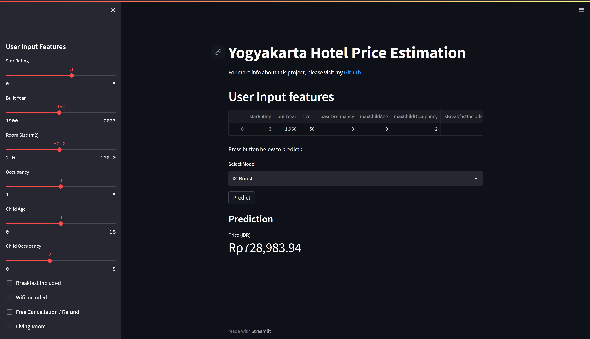

Studi Kasus 2
Project Regresi Hotel Yogyakarta
Deskripsi
Project ini merupakan contoh project Data Science yang menggunakan data hotel di Yogyakarta. Project ini bertujuan untuk memprediksi harga kamar hotel berdasarkan fitur-fitur yang ada. Project ini menggunakan 3 algoritma yaitu, XGBoost, Random Forest, dan SVM. Project ini juga menggunakan teknik hyperparameter tuning untuk meningkatkan performa model. Kemudian model tersebut dilakukan deployment menggunakan streamlit
Tentang data
Data ini diperoleh dengan teknik scrapping pada website Traveloka. Data ini berbentuk sqlite yang berisikan 2 tabel bernama hotel_yogyakarta dan hotel_room_yogyakarta
hotel_yogyakarta
Berikut detail column pada tabel hotel_yogyakarta. Dimensi (378, 12)
id: Unique id hoteltype: Tipe penginapanname: Nama hotelstarRating: Rating bintang hotelbuiltYear: Tahun dibuatnya hoteldescription: Deskripsi tentang hotellink: URL menuju halaman hotel di Travelokaaddress: Alamat hotelcity: Kota hotelimage: URL gambar hotelfacilities: Daftar fasilitas pada hotelnearestPointofInterests: Area populer / fasilitas umum disekitar hotel
hotel_room_yogyakarta
Berikut detail column pada tabel hotel_room_yogyakarta. Dimensi (1199, 16)
id: Unique id hotelhotelId: Id hotelroomType: Tipe kamar hoteldescription: deskripsi kamar hotelbedDescription: deskripsi kasur kamarsize: Ukuran kamar (\(m^2\))originalRate: Harga kamar per malambaseOccupancy: Kapasitas kamarmaxChildAge: Umur maksimal anak-anakmaxChildOccupancy: Kapasitas kamar untuk anak-anaknumExtraBeds: Jumlah kasur tambahanisBreakfastIncluded: Fasilitas sarapanisWifiIncluded: Fasilitas WiFiisRefundable: Fasilitas refundhasLivingRoom: Fasilitas ruang keluargafacilities: Daftar fasilitas lainnya pada kamar
Data analysis
Import library
from sqlite3 import connect
import pickle
import pandas as pd
import json
import seaborn as sns
import matplotlib.pyplot as plt
from sklearn.preprocessing import MultiLabelBinarizerLoad data
Buat koneksi ke database sqlite, lalu baca tabel hotel_yogyakarta danhotel_room_yogyakarta menjadi dataframe pandas.
# SQLite3 connection
con = connect('./dataset/hotel-directories-ORI.sqlite3')
df_sql_hotel = pd.read_sql_query("SELECT * from hotel_yogyakarta", con=con)
df_sql_room = pd.read_sql_query("SELECT * from hotel_room_yogyakarta", con=con)
con.close()
# Table columns
print('Kolom Tabel Hotel :')
print(df_sql_hotel.columns)
print("Total Baris :", df_sql_hotel.shape[0])
print("Total Kolom :", df_sql_hotel.shape[1])
print('-' * 50)
print('Kolom Tabel Kamar:')
print(df_sql_room.columns)
print("Total Baris :", df_sql_room.shape[0])
print("Total Kolom :", df_sql_room.shape[1])Untuk melihat hasil dataframe dapat dilakukan menggunakan code berikut.
print(f"Dimensi : {df_sql_hotel.shape}")
df_sql_hotel.sample(2)print(f"Dimensi : {df_sql_room.shape}")
df_sql_room.sample(2)# Fungsi menghitung unique value
def check_unique(df):
count = 0
for i in df.columns:
if df[i].nunique() == 1:
count += 1
print(f'{i}: {df[i].nunique()}')
else:
print(f'{i}: {df[i].nunique()}')
if count == 0:
print('No columns with only one unique value')Gunakan fungsi check_unique() untuk mengecek apakah terdapat data dengan unique value kurang dari 2. Jika ada, maka data tersebut tidak akan digunakan.
check_unique(df_sql_hotel)check_unique(df_sql_room)- Nilai penghubung kedua tabel adalah
idpada data hotel danhotelIdpada data kamar. - Terdapat beberapa beberapa kolom yang tidak digunakan pada analisis ini
- Hotel:
name,description,link,address, danimage. - Kamar:
id,roomType,description, danbedDescription.
- Hotel:
- Terdapat beberapa kolom dengan total nilai unik kurang dari 2
- Hotel:
typedancity. - Kamar:
bedDescriptiondannumExtraBeds
- Hotel:
- Setelah dilakukan penghapusan kolom selanjutnya tabel akan di-merge menjadi satu dataframe.
starRatingmemiliki 8 nilai unik, perlu di teliti lebih lanjut untuk detailnya.
Menghapus Kolom
hotelDrop = ['name', 'description', 'link', 'address', 'image', 'type', 'city']
roomDrop = ['id', 'roomType', 'description', 'bedDescription', 'numExtraBeds']
df_hotel = df_sql_hotel.drop(hotelDrop, axis=1)
df_room = df_sql_room.drop(roomDrop, axis=1)
print('Total Hotel Table Data : ', df_hotel.shape[0])
print('Total Hotel Table Column : ', df_hotel.shape[1])
print('-' * 30)
print('Total Room Table Data : ', df_room.shape[0])
print('Total Room Table Column : ', df_room.shape[1])Merge Data
# Rename column
df_hotel.rename(columns={'id': 'hotelId'}, inplace=True)
df_hotel.rename(columns={'facilities': 'hotelFacilities'}, inplace=True)
df_room.rename(columns={'facilities': 'roomFacilities'}, inplace=True)- Menyamakan nama
idpada tabel hotel danhotelIdpada tabel kamar. - Menambah prefix
hoteldanroompada tiap kolomfacilitiesmasing-masing tabel.
# merge hotel dan room data
df = pd.merge(df_hotel, df_room, on='hotelId', how='inner')
# remove id column
df.drop(columns=['hotelId'], inplace=True)
# re arrange column
df = df[['originalRate', 'starRating', 'builtYear', 'size', 'baseOccupancy', 'maxChildAge',
'maxChildOccupancy', 'isBreakfastIncluded', 'isWifiIncluded', 'isRefundable',
'hasLivingRoom', 'hotelFacilities', 'roomFacilities', 'nearestPointOfInterests']]
df- Dimensi pasca penggabungan adalah
(1199, 14) - Menghapus kolom
hotelIdkarena sudah tidak diperlukan lagi. - Mengubah urutan kolom untuk mempermudah analisis, target kolom berada di kiri dan kolom array berada di kanan.
Target Processing
for i in range(0, 5):
print(df.loc[i, 'originalRate'])- Data berbentuk
JSONatauDictionary, maka perlu diubah menjadi nilai harga dengan 1 nilai. - Karena semua data menggunakan matauang
IDR, makacurrencytidak diperlukan.
# Extract the amount from originalRate using a lambda function
df['rate'] = df['originalRate'].apply(lambda x: json.loads(x)['amount'])
df['tax'] = df['originalRate'].apply(lambda x: json.loads(x)['tax'])
df = df.drop(columns=['originalRate'])# check tipe data
print('Tipe data harga :', df['rate'].dtype)
print('Tipe data pajak :', df['tax'].dtype)# ubah tipe data
df['rate'] = df['rate'].astype('int')
df['tax'] = df['tax'].astype('int')
print('Tipe data harga :', df['rate'].dtype)
print('Tipe data pajak :', df['tax'].dtype)Rasio Pajak
Tahap ini bertujuan untuk mengetahui rasio pajak dari harga kamar hotel. Rasio pajak ini akan digunakan untuk menghitung harga kamar hotel setelah dikenakan pajak.
# create series for original rate
original_rate = df['rate']
# create series for tax
tax = df['tax']
# create dataframe for original rate, tax, and tax rate
df_rate = pd.DataFrame({'original_rate': original_rate, 'tax': tax})
df_rate['tax_rate'] = df_rate['tax'] / df_rate['original_rate'] * 100
df_rate# count number of data with tax rate 20% and under 21%, also over 21%
count0 = 0
count_20 = 0
countBetween = 0
for i in range(len(df_rate['tax_rate'])):
if df_rate['tax_rate'][i] < 20 and df_rate['tax_rate'][i] > 0:
countBetween += 1
elif df_rate['tax_rate'][i] >= 20:
count_20 += 1
elif df_rate['tax_rate'][i] == 0:
count0 += 1
print('Median pajak : ', df_rate['tax_rate'].median())
print('null / 0% pajak: ', count0)
print('Pajak diantara 0 - 20%:', countBetween)
print('Rasio pajak diatas 20% :', count_20)
# plot for tax rate and give the total value on the top of the bar if the value is 0% it will not show
sns.set(rc={'figure.figsize': (10, 7)})
sns.set_style('darkgrid')
ax = sns.histplot(df_rate['tax_rate'], kde=False, color='dodgerblue', bins=9)
ax.set(xlabel='Tax Rate (%)', ylabel='Count')
ax.set_title('Tax Rate Distribution')
total = len(df_rate['tax_rate'])
for p in ax.patches:
height = p.get_height()
if height != 0:
ax.text(p.get_x()+p.get_width()/2.,
height + 15,
'{:1.2f}%'.format(100*height/total),
ha="center")
plt.show()# Menghapus kolom pajak
df = df.drop(columns=['tax'])
# Mengubah target kolom menjadi di awal
# sekedar untuk merapikan dataframe
df = df[['rate'] + [col for col in df.columns if col != 'rate']]
df.columns- Pajak hotel di Yogyakarta ada di kisaran
20-22%dengan median21% - Karena
94%data memiliki pajak dikisaran tersebut maka nilai pajak dianggap 21%(median) secara keseluruhan.
Validaasi Data
Pengecekan Rating Bintang
# starRating Distribution
value = df.starRating.value_counts()
print('OriginalRate Distribution by starRating')
print(value)
# starRating Distribution by percentage
value_percentage = value / len(df) * 100
# create a list of tuples where each tuple contains the value and index of each element in the value_percentage series
value_percentage_list = [(value_percentage[i], i)
for i in value_percentage.index]
# sort the list by the value in descending order
value_percentage_list_sorted = sorted(value_percentage_list, reverse=True)
fig, ax = plt.subplots(1, 2, figsize=(20, 10), dpi=80,
gridspec_kw={'width_ratios': [1, 0.5]})
sns.histplot(df, x="rate", hue='starRating', palette='bright',
ax=ax[0]).set(title='OriginalRate Distribution by starRating')
# starRating percentage plot
sns.barplot(x=value_percentage.index, y=value_percentage.values,
palette='bright', ax=ax[1]).set(title='starRating percentage')
# add the percentage text using the sorted list
for container in ax[1].containers:
for bar in container.patches:
v = bar.get_height()
bar_center = bar.get_x() + bar.get_width() / 2
ax[1].text(bar_center, v + 0.5,
f'{v:.2f}%', color='black', fontweight='bold', ha='center')
fig.tight_layout()- Rating bintang memiliki beberapa nilai dengan 0.5 (desimal), tetapi nilai tersebut hanya memiliki persentase jumlah data yang sedikit, maka dari itu rating tersebut dihilangkan angka desimalnya dari rating seharusnya.
# ubah starRating dengan angka bulat
df['starRating'] = df['starRating'].replace(2.5, 2)
df['starRating'] = df['starRating'].replace(3.5, 3)# starRating Distribution
value = df.starRating.value_counts()
print('OriginalRate Distribution by starRating')
print(value)
# starRating Distribution by percentage
value_percentage = value / len(df) * 100
# create a list of tuples where each tuple contains the value and index of each element in the value_percentage series
value_percentage_list = [(value_percentage[i], i)
for i in value_percentage.index]
# sort the list by the value in descending order
value_percentage_list_sorted = sorted(value_percentage_list, reverse=True)
fig, ax = plt.subplots(1, 2, figsize=(20, 10), dpi=80,
gridspec_kw={'width_ratios': [1, 0.5]})
sns.histplot(df, x="rate", hue='starRating', palette='bright',
ax=ax[0]).set(title='OriginalRate Distribution by starRating')
# starRating percentage plot
sns.barplot(x=value_percentage.index, y=value_percentage.values,
palette='bright', ax=ax[1]).set(title='starRating percentage')
# add the percentage text using the sorted list
for container in ax[1].containers:
for bar in container.patches:
v = bar.get_height()
bar_center = bar.get_x() + bar.get_width() / 2
ax[1].text(bar_center, v + 0.5,
f'{v:.2f}%', color='black', fontweight='bold', ha='center')
fig.tight_layout()- Persentase persebaran data tiap rating bintang sudah lebih baik setelah dilakukan pengubahan nilai rating bintang.
- Terlihat pada plot yang
kiribahwa terdapat ekor yang sangat panjang, ini menunjukkan adanya outlier pada kolom harga(rate)
df.info()- Kolom
starRatingmasih bertipe datafloatwalau sudah tidak memiliki angka desimal, maka perlu akan menjadiint - Kolom
builtYearharus diganti ke tipe dataint - Kolom
sizeharus diganti ke tipe datafloat(tipe data dasar dari tabel sqlite adalahfloat) - Terdapat nilai
nullpada kolombuiltYeardansizeyang harus ditangani
df['starRating'] = df['starRating'].astype('int')
print('Tipe data starRating :', df['starRating'].dtype)Data Cleaning
Check Duplicate Data
# show index who has duplicate value
print('Total duplicated row = ', df.duplicated().sum())
# print duplicated data list index 1
df[df.duplicated(keep=False)]# drop duplicate data
df = df.drop_duplicates(keep='first')
df.shape- Dengan menggunakan parameter
keep = 'first'maka data yang duplikat akan dihapus kecuali data pertama yang muncul.
Check Null
# Jumlah baris data
jumlah_baris_ori = df.shape[0]
# crate dataframe for null value
df_null = pd.DataFrame(df.isnull().sum(), columns=['null_value'])
df_null['null_value_percentage'] = df_null['null_value'] / len(df) * 100
df_null- Terdapat 2 data yang memiliki nilai
nulldengan persentase yang cukup tinggi, yaitu kolombuiltYeardansize. Oleh karena itu data tersebut akan diubah dengan nilai median per rating hotel.
# create new dataframe for null value rows
df_null_rows = df[df.isnull().any(axis=1)]
df_null_rows# ubah sementara null value menjadi 0
df['builtYear'] = df['builtYear'].fillna(0)
df['size'] = df['size'].fillna(0)
# ubah tipe data
df['builtYear'] = df['builtYear'].astype('int32')
df['size'] = df['size'].astype('float')
print('Tipe data builtYear :', df['builtYear'].dtype)
print('Tipe data size :', df['size'].dtype)Kolom yang memiliki nilai null akan membuat tipe data menjadi object, maka dari itu pada penelitian ini akan diisi dengan nilai 0 terlebih dahulu, kemudian kolom tersebut diubah tipe datanya
# ubah nilai 0 pada kolom builtYear menjadi median tiap starRating
for i in df['starRating'].unique():
df.loc[(df['starRating'] == i) & (df['builtYear'] == 0),
'builtYear'] = df[df['starRating'] == i]['builtYear'].median()
# ubah nilai 0 pada kolom size menjadi median tiap starRating
for i in df['starRating'].unique():
df.loc[(df['starRating'] == i) & (df['size'] == 0),
'size'] = df[df['starRating'] == i]['size'].median()
# crate dataframe for null value
df_null = pd.DataFrame(df.isnull().sum(), columns=['null_value'])
df_null['null_value_percentage'] = df_null['null_value'] / len(df) * 100
df_null- Data sudah tidak memiliki nilai
null
Statistik Deskriptif
df.describe()- Pada kolom
builtYearterdapat nilai minimum1yang tidak mungkin terjadi, maka data tersebut akan dihapus. - nilai median pada
ratedansizeterpaut cukup jauh dengan nilai maximum, ini menunjukkan adanya outlier pada kolomrate.
Built Year Data Handling
# Cek nilai unique pada kolom builtYear dibawah 2000
print('Nilai unique builtYear dibawah 2000 :')
print(df[df['builtYear'] < 2000]['builtYear'].unique())
print('Nilai unique bulitYear dibawah 1900 :')
print(df[df['builtYear'] < 1900]['builtYear'].unique())- Terdapat data yang memiliki nilai
builtYearyang tidak mungkin terjadi, maka data tersebut akan dihapus. - Tidak terdapat hotel dibawah tahun 1900, maka dari itu data yang disimpan adalah data diatas tahun 1900.
# menghapus baris yang memiliki nilai dibawah 1900 pada kolom builtYear
df = df[df['builtYear'] > 1900]
# Cek nilai unique pada kolom builtYear dibawah 2000
print('Nilai unique builtYear dibawah 2000 :')
print(df[df['builtYear'] < 2000]['builtYear'].unique())Outlier Handling
Rate Data
# Statistik Harga
print('Harga')
print(f'maximum value : {df.rate.max()}')
print(f'minimum value : {df.rate.min()}')
print(f'skew value : {round(df.rate.skew(), 2)}')
# Distribusi harga
sns.set_style('darkgrid')
plt.figure(figsize=(20, 10), dpi=80)
sns.displot(df, x="rate", kind="kde", fill=True).set(
title='OriginalRate Distribution')
plt.show()- Kolom
ratememiliki nilai skew yang cukup tinggi, selain itu dari plot terlihat memiliki ekor yang cukup panjang. Ini menunjukkan adanya outlier pada kolomrate. - Penghapusan outlier dilakukan dengan menggunakan metode IQR.
Untuk penjelasan lebih lanjut mengenai skew dapat dilihat disini
# Hitung outlier pada kolom rate
Q1 = df['rate'].quantile(0.25)
Q3 = df['rate'].quantile(0.75)
IQR = Q3 - Q1
print('Batas bawah :', Q1 - (1.5 * IQR))
print('Batas atas :', Q3 + (1.5 * IQR))
# Hitung jumlah outlier
total_outlier = len(df[(df['rate'] < (Q1 - (1.5 * IQR))) | (df['rate'] > (Q3 + (1.5 * IQR)))])
print('Jumlah outlier :', total_outlier)- Terdapat 91 data outlier pada kolom
rate.
# Hapus outlier
df = df[(df['rate'] > (Q1 - (1.5 * IQR))) & (df['rate'] < (Q3 + (1.5 * IQR)))]
df.describe()- Nilai maksimum sudah cukup menurun setelah dilakukan penghapusan outlier.
- Nilai maksimum pada kolom
sizejuga ikut menurun.
# Statistik Harga
print('Harga')
print(f'maximum value : {df.rate.max()}')
print(f'minimum value : {df.rate.min()}')
print(f'skew value : {round(df.rate.skew(), 2)}')
# Distribusi harga
sns.set_style('darkgrid')
plt.figure(figsize=(20, 10), dpi=80)
sns.displot(df, x="rate", kind="kde", fill=True).set(
title='OriginalRate Distribution')
plt.show()- Nilai skew pada kolom
ratesudah menjadi lebih baik setelah dilakukan penghapusan outlier.
Size Data
# Statistik Size
print('Size')
print('maximum value : {}'.format(df['size'].max()))
print('minimum value : {}'.format(df['size'].min()))
print('skew value : {}'.format(df['size'].skew()))
# Distribusi size
plt.figure(figsize=(20, 10), dpi=80)
sns.set_style('darkgrid')
sns.jointplot(data=df, x='size', y='rate')
plt.show()- Nilai skew sudah sangat mendekati angka 1, ini menunjukkan bahwa distribusi data sudah sangat baik.
# Hasil data cleaning
print('Total baris data awal :', jumlah_baris_ori)
print('Total baris data yang dihapus :', jumlah_baris_ori - df.shape[0])
print('Total baris data setelah cleaning :', df.shape[0])df.isnull().sum()Encoding Data
df = df.reset_index(drop=True)
df.info()- Kolom
hotelfacilities,roomfacilities, dannearestPointofInterestsmerupakan sebuah fitur dengan multi label. Oleh karena itu data tersebut akan dilakukanmulti-hot encoding. - Proses tersebut akan dilakukan dengan library
sklearn.preprocessing.MultiLabelBinarizer
Untuk penjelasan lebih lanjut tentang multi-label dan multi-class dapat dilihat disini
Check data format
df['hotelFacilities'].head(2)df['roomFacilities'].head(2)df['nearestPointOfInterests'].head(2)roomfacilitiesdanhotelFacilitiesmemiliki format yang sama, yaitulistyang berisistring.nearestPointofInterestsmemiliki format yang berbeda, yaitulistyang berisidictionary/jsonyang berisistringdanfloat.
Data Preprocessing
# create a MultiLabelBinarizer object
mlb = MultiLabelBinarizer()- Daftar kolom hasil encoding akan diexport menjadi file
pklyang akan digunakan pada aplikasi streamlit.
# reformat kolom hotelFacilities
df['hotelFacilities'] = df['hotelFacilities'].apply(eval)
# multi label binarizer untuk kolom hotelFacilities dengan preifx Hotel_
hotel_facilities = pd.DataFrame(mlb.fit_transform(
df['hotelFacilities']), columns=[f'Hotel_{col}' for col in mlb.classes_])
hotelNewCol = hotel_facilities.shape[1]
print('Jumlah kolom :', hotel_facilities.shape[1])
# export hotel_facilities with pickle
hotelFacilities = hotel_facilities.columns.tolist()
pickle.dump(hotelFacilities, open('hotelFacilities.pkl', 'wb'))
hotel_facilities.head(2)# reformat kolom roomFacilities
df['roomFacilities'] = df['roomFacilities'].apply(eval)
# multi label binarizer untuk kolom roomFacilities dengan preifx Room_
room_facilities = pd.DataFrame(mlb.fit_transform(df['roomFacilities']), columns=[
f'Room_{col}' for col in mlb.classes_])
roomNewCol = room_facilities.shape[1]
print('Jumlah kolom :', roomNewCol)
# export room_facilities with pickle
roomFacilities = room_facilities.columns.tolist()
pickle.dump(roomFacilities, open('roomFacilities.pkl', 'wb'))
room_facilities.head(2)# reformat kolom nearestPointOfInterests
df['nearestPointOfInterests'] = df['nearestPointOfInterests'].apply(
lambda x: [item['landmarkType'] for item in json.loads(x)])
# multi label binarizer untuk kolom nearestPointOfInterests dengan preifx Point_
pointOfInterests = pd.DataFrame(mlb.fit_transform(
df['nearestPointOfInterests']), columns=[f'Point_{col}' for col in mlb.classes_])
pointNewCol = pointOfInterests.shape[1]
print('Jumlah kolom :', pointNewCol)
# export pointOfInterests with pickle
pointInterests = pointOfInterests.columns.tolist()
pickle.dump(pointInterests, open('pointInterests.pkl', 'wb'))
pointOfInterests.head(2)Menggabungkan hasil encoding
# Total kolom encoding
totalNewCol = hotelNewCol + roomNewCol + pointNewCol
print('Total kolom encoding :', totalNewCol)# menghapus kolom hotelFacilities, roomFacilities, dan nearestPointOfInterests
df = df.drop(columns=['hotelFacilities', 'roomFacilities', 'nearestPointOfInterests'])
print('df shape :', df.shape)
print('hotel_facilities shape :', hotel_facilities.shape)
print('room_facilities shape :', room_facilities.shape)
print('pointOfInterests shape :', pointOfInterests.shape)
df = pd.concat([df, hotel_facilities, room_facilities,
pointOfInterests], axis=1)
df.head()df.info()Export Data ke CSV
df.to_csv('kamar-hotel-yogyakarta.csv', index=False)col = df.columns
# export col with pickle
pickle.dump(col, open('col.pkl', 'wb'))print(col)Data Anlisis
value = df.starRating.value_counts()
print(value)
# starRating Distribution by percentage
value_percentage = value / len(df) * 100
# create a list of tuples where each tuple contains the value and index of each element in the value_percentage series
value_percentage_list = [(value_percentage[i], i)
for i in range(len(value_percentage))]
# sort the list by the value in descending order
value_percentage_list_sorted = sorted(value_percentage_list, reverse=True)
fig, ax = plt.subplots(1, 2, figsize=(20, 10), dpi=80,
gridspec_kw={'width_ratios': [1, 0.5]})
sns.histplot(df, x="rate", hue='starRating', palette='bright',
ax=ax[0]).set(title='Rate Distribution by starRating')
sns.barplot(x=value_percentage.index, y=value_percentage.values,
palette='bright', ax=ax[1]).set(title='starRating percentage')
# add the percentage text using the sorted list
for i, (v, index) in enumerate(value_percentage_list_sorted):
ax[1].text(index, v + 0.5, str(round(v, 2)) + '%',
color='black', fontweight='bold', ha='center')
fig.tight_layout()filtered_0 = df[df['starRating'] == 0.0]
filtered_1 = df[df['starRating'] == 1.0]
filtered_2 = df[df['starRating'] == 2.0]
filtered_3 = df[df['starRating'] == 3.0]
filtered_4 = df[df['starRating'] == 4.0]
filtered_5 = df[df['starRating'] == 5.0]
print('Skew value for every starRating')
print(df.groupby('starRating')['rate'].skew())
# OriginalRate Distribution by starRating using hisplot inside subplot
fig, ax = plt.subplots(2, 3, figsize=(20, 10), dpi=80,
gridspec_kw={'width_ratios': [1, 1, 1]})
sns.histplot(filtered_0, x="rate", ax=ax[0, 0]).set(
title='Rate Distribution by 0 starRating')
sns.histplot(filtered_1, x="rate", ax=ax[0, 1]).set(
title='Rate Distribution by 1 starRating')
sns.histplot(filtered_2, x="rate", ax=ax[0, 2]).set(
title='Rate Distribution by 2 starRating')
sns.histplot(filtered_3, x="rate", ax=ax[1, 0]).set(
title='Rate Distribution by 3 starRating')
sns.histplot(filtered_4, x="rate", ax=ax[1, 1]).set(
title='Rate Distribution by 4 starRating')
sns.histplot(filtered_5, x="rate", ax=ax[1, 2]).set(
title='Rate Distribution by 5 starRating')
fig.tight_layout()# Statistik Harga tiap rating bintang hotel
dfRateStat = df.groupby('starRating').agg(
{'rate': ['mean', 'std', 'min', 'max', lambda x: x.quantile(0.25), 'median', lambda x: x.quantile(0.75)]})
# change the column name from index 4 and 6
dfRateStat = dfRateStat.rename(
columns={'<lambda_0>': '25%', '<lambda_1>': '75%'})
dfRateStat- Pada kota Yogyakarta tidak terdapat banyak hotel bintang 5.
- Mayoritas hotel di Yogyakarta adalah hotel bintang 0.
- Terdapat hotel bintang 2 yang memiliki harga setara dengan hotel bintang 5.
Dari tabel statistik tersebut mengindikasikan beberapa nilai yang tidak wajar. Untuk penelitian selanjutnya bisa dilakukan pembersihan data lebih mendalam lagi.
Hasil dari multi-hot encoding juga belum dilakukan pembersihan data, selain itu dengan banyaknya hasil kolom juga dapat dilakukan reduksi dimensi, contohnya menggunakan PCA. Oleh karena itu untuk penelitian selanjutnya bisa dilakukan pembersihan data lebih mendalam lagi dan dilakukan reduksi dimensi.
Masih banyak informasi-informasi yang dapat di ambil dari data ini, seperti:
- Perbandingan harga hotel bintang 5 dengan hotel bintang 0.
- Landmark apa yang paling banyak dicari oleh pengunjung hotel?
- Fasilitas apa yang sudah manjadi standar pada hotel bintang 3?
- Dan masih banyak lagi.
Pemodelan Machine Learning
Import Libraries
import numpy as np
import xgboost as xgb
from sklearn.experimental import enable_halving_search_cv
from sklearn.model_selection import train_test_split, HalvingGridSearchCV
from sklearn.svm import SVR
from sklearn.ensemble import RandomForestRegressor
from sklearn.metrics import mean_squared_error, r2_score
from IPython import displaySeparate and Splitting Data
# separate the feature and target
x = df.iloc[:, 1:]
y = df.iloc[:, 0]
# splitting data into data train and test
x_train, x_test, y_train, y_test = train_test_split(x, y, test_size=0.2, random_state=123)
trainRatio = round(x_train.shape[0]/len(df), 2)*100
testRatio = round(x_test.shape[0]/len(df), 2)*100
print(f'Train set: {x_train.shape[0]} ({trainRatio}%)')
print(f'Test set: {x_test.shape[0]} ({testRatio}%)')Inisiasi Model
xgReg = xgb.XGBRegressor( # Berikut adalah parameter default dari XGBRegressor, jika tidak diberikan parameter maka akan menggunakan parameter tersebut.
objective='reg:squarederror',
eval_metric='rmse',
)
svr = SVR(
cache_size=1500,
)
rf = RandomForestRegressor()
scoring = ['neg_mean_squared_error','r2']Train and Evaluation Data
xgReg.fit(x_train, y_train, verbose=False)
print('Train evaluation')
preds = xgReg.predict(x_train)
mse = mean_squared_error(y_train, preds)
rmse = np.sqrt(mse)
print('RMSE: ', '{0:,.0f}'.format(rmse))
print('R2: ', round(r2_score(y_train, preds), 3))
print('-'*20)
print('Test evaluation')
preds = xgReg.predict(x_test)
mse = mean_squared_error(y_test, preds)
rmse = np.sqrt(mse)
print('RMSE: ', '{0:,.0f}'.format(rmse))
print('R2: ', round(r2_score(y_test, preds), 3))
svr.fit(x_train, y_train)
print('Train evaluation')
preds = svr.predict(x_train)
mse = mean_squared_error(y_train, preds)
rmse = np.sqrt(mse)
print('RMSE: ', '{0:,.0f}'.format(rmse))
print('R2: ', round(r2_score(y_train, preds), 3))
print('-'*20)
print('Test evaluation')
preds = svr.predict(x_test)
mse = mean_squared_error(y_test, preds)
rmse = np.sqrt(mse)
print('RMSE: ', '{0:,.0f}'.format(rmse))
print('R2: ', round(r2_score(y_test, preds), 3))
rf.fit(x_train, y_train)
print('Train evaluation')
preds = rf.predict(x_train)
mse = mean_squared_error(y_train, preds)
rmse = np.sqrt(mse)
print('RMSE: ', '{0:,.0f}'.format(rmse))
print('R2: ', round(r2_score(y_train, preds), 3))
print('-'*20)
print('Test evaluation')
preds = rf.predict(x_test)
mse = mean_squared_error(y_test, preds)
rmse = np.sqrt(mse)
print('RMSE: ', '{0:,.0f}'.format(rmse))
print('R2: ', round(r2_score(y_test, preds), 3))Select Parameters for Tuning
xgParams = {
'colsample_bytree': [0.5, 0.6, 0.7, 0.8],
'learning_rate': [0.01, 0.05, 0.1,],
'max_depth': np.arange(3,30,10),
'reg_alpha': np.arange(0,5,1),
'reg_lambda': np.arange(0,5,1),
'subsample': [0.5, 0.6, 0.7, 0.8],
}
svrParams = {
'kernel': ['linear', 'poly', 'rbf', 'sigmoid'],
'C': [ 1000, 10000, 25000, 50000],
}
rfParams = {
'n_estimators': [100, 200, 300, 400, 500],
'max_depth': [None, 5, 10, 15, 20],
'min_samples_split': [2, 5, 10],
'min_samples_leaf': [1, 2, 4],
'max_features': ['sqrt', 'log2', None],
}Tuning Parameter XGB Model
# Array for evaluation of models
MODEL = []
TEST = []
TRAIN = []
def eval(model,testR2, testRMSE,trainR2, trainRMSE):
MODEL.append(model)
TEST.append({'r2': round(testR2, 2), 'rmse': testRMSE})
TRAIN.append({'r2': round(trainR2, 2), 'rmse': trainRMSE})
gridXGB = HalvingGridSearchCV(
xgReg,
param_grid=xgParams,
cv=3,
n_jobs=-1,
verbose=3,
scoring='neg_mean_squared_error',
refit=True,
random_state=123,
)
gridXGB.fit(x_train, y_train)
print('Train evaluation')
preds = gridXGB.predict(x_train)
mse = mean_squared_error(y_train, preds)
rmseTrain = np.sqrt(mse)
r2Train = round(r2_score(y_train, preds), 2)
print('RMSE: ', '{0:,.0f}'.format(rmseTrain))
print('R2: ', r2Train)
print('-'*20)
print('Test evaluation')
preds = gridXGB.predict(x_test)
mseTest = mean_squared_error(y_test, preds)
rmseTest = np.sqrt(mseTest)
r2Test = round(r2_score(y_test, preds), 2)
print('RMSE: ', '{0:,.0f}'.format(rmseTest))
print('R2: ', r2Test)
eval('XGBRegressor', r2Test, rmseTest, r2Train, rmseTrain)
print(gridXGB.best_params_)
plt.figure(figsize=(5, 5))
plt.scatter(preds, y_test, color='r', s=5)
plt.xlabel('Prediction')
plt.ylabel('Actual')
plt.plot([0, 15e5], [0, 15e5])
plt.savefig('../Picture/XGBprediction.png', bbox_inches='tight', dpi=400)
plt.show()
Tuning Parameter Random Forest Model
gridRF = HalvingGridSearchCV(
rf,
param_grid=rfParams,
cv=3,
n_jobs=-1,
verbose=3,
scoring='neg_mean_squared_error',
refit=True,
random_state=123
)
gridRF.fit(x_train, y_train)
print('Train evaluation')
preds = gridRF.predict(x_train)
mse = mean_squared_error(y_train, preds)
rmseTrain = np.sqrt(mse)
r2Train = round(r2_score(y_train, preds), 2)
print('RMSE: ', '{0:,.0f}'.format(rmseTrain))
print('R2: ', r2Train)
print('-'*20)
print('Test evaluation')
preds = gridRF.predict(x_test)
mseTest = mean_squared_error(y_test, preds)
rmseTest = np.sqrt(mseTest)
r2Test = round(r2_score(y_test, preds), 2)
print('RMSE: ', '{0:,.0f}'.format(rmseTest))
print('R2: ', r2Test)
eval('RandomForest Regressor', r2Test, rmseTest, r2Train, rmseTrain)
plt.figure(figsize=(5, 5))
plt.scatter(preds, y_test, color='r', s=5)
plt.xlabel('Prediction')
plt.ylabel('Actual')
plt.plot([0, 15e5], [0, 15e5])
plt.savefig('../Picture/RFprediction.png', bbox_inches='tight', dpi=400)
plt.show()
Tuning Parameter SVR Model
gridSVR = HalvingGridSearchCV(
svr,
param_grid=svrParams,
cv=3,
n_jobs=-1,
verbose=3,
scoring='neg_mean_squared_error',
refit=True,
)
gridSVR.fit(x_train, y_train)
print(gridSVR.best_params_)
print('Train evaluation')
preds = gridSVR.predict(x_train)
mse = mean_squared_error(y_train, preds)
rmseTrain = np.sqrt(mse)
r2Train = round(r2_score(y_train, preds), 2)
print('RMSE: ', '{0:,.0f}'.format(rmseTrain))
print('R2: ', r2Train)
print('-'*20)
print('Test evaluation')
preds = gridSVR.predict(x_test)
mseTest = mean_squared_error(y_test, preds)
rmseTest = np.sqrt(mseTest)
r2Test = round(r2_score(y_test, preds), 2)
print('RMSE: ', '{0:,.0f}'.format(rmseTest))
print('R2: ', r2Test)
eval('SVR', r2Test, rmseTest, r2Train, rmseTrain)
plt.figure(figsize=(6, 6))
plt.scatter(preds, y_test, color='r', s=5)
plt.xlabel('Prediction')
plt.ylabel('Actual')
plt.plot([0, 15e5], [0, 15e5])
plt.savefig('../Picture/SVRprediction.png', bbox_inches='tight', dpi=400)
plt.show()Open plot from Picture folder
print('XGBRegressor prediction')
display.Image('../Picture/XGBprediction.png', width=600, height=600)
print('RandomForest Regressor prediction')
display.Image('../Picture/RFprediction.png', width=600, height=600)
print('SVR prediction')
display.Image('../Picture/SVRprediction.png', width=600, height=600)Refit The Model With The Best Parameters Into Best Model
# refit the model with the best parameters into bestModel
xgbModel = gridXGB.best_estimator_.fit(x_train, y_train)
svrModel = gridSVR.best_estimator_.fit(x_train, y_train)
rfModel = gridRF.best_estimator_.fit(x_train, y_train)export The Models
with open('../Model/xgbModel.pkl', 'wb') as file:
pickle.dump(xgbModel, file)
with open('../Model/svrModel.pkl', 'wb') as file:
pickle.dump(svrModel, file)
with open('../Model/rfModel.pkl', 'wb') as file:
pickle.dump(rfModel, file)Statistik Data
evalData = {
'Model': MODEL,
'Test R2': [d['r2'] for d in TEST],
'Test RMSE': [d['rmse'] for d in TEST],
'Train R2': [d['r2'] for d in TRAIN],
'Train RMSE': [d['rmse'] for d in TRAIN]
}
df_eval = pd.DataFrame(evalData)
df_eval.sort_values(by='Test RMSE', ascending=True)Deployment
import streamlit as st
import pandas as pd
import sqlite3
import pickle
import time
import sklearn
from sklearn.ensemble import RandomForestClassifier
# load file with pickle and read binaruy
hotelFacilities = pickle.load(open('hotelFacilities.pkl','rb'))
roomFacilities = pickle.load(open('roomFacilities.pkl','rb'))
nearestPoint = pickle.load(open('pointInterests.pkl','rb'))
colOri = pickle.load(open('col.pkl','rb'))
# load model from pikcle
xgbModel = pickle.load(open('xgbModel.pkl','rb'))
svrModel = pickle.load(open('svmModel.pkl','rb'))
rfModel = pickle.load(open('RFModel.pkl','rb'))
# mengatur konfigurasi halaman
st.set_page_config(
page_title = "Estimasi Hotel Yogyakarta",
page_icon = ':hotel' #nama emoji
)
# st.write dapat digunakan menampilkan test,dataframe,visualisasi
st.title('Yogyakarta Hotel Price Estimation')
st.write('for mor ingo about blablabal')
# st.sidebar dapat digunakan untuk membuat sidebar
st.sidebar.header("User Input Features")
# Input User untuk memasukkan elemen input use dalam sidebar dilakukan
# dengan st.sidebar.slider,st.sidebar.selectbox dll
def user_input_features():
starRating = st.sidebar.slider('Star Rating',0,5,3) #(label,minvalues,maxvalues,initial values)
builtYear = st.sidebar.slider('Built Year',1900,2023,1960)
size = st.sidebar.slider("Room Size (m2)",2.0,100.0,50.0,0.1,format='%0.1f')#(label,minvalues,maxvalues,initial values,jarak increment,format spesifik)
occupancy = st.sidebar.slider('Occupancy',1,5,3)
childAge = st.sidebar.slider('Child Age',0,18,9)
childOccupancy = st.sidebar.slider('Child Occupancy',0,5,2)
breakfast = st.sidebar.checkbox('Breakfast Include')
wifi = st.sidebar.checkbox("Wifi Include")
refund = st.sidebar.checkbox('Refund')
livingRoom = st.sidebar.checkbox('Living Room')
hotelFacilitie = st.sidebar.multiselect('Hotel Facilities',(hotelFacilities))
roomFacilitie = st.sidebar.multiselect('Room Faciclities', (roomFacilities))
pointInterest = st.sidebar.multiselect('Point of Interest',(nearestPoint))
# handle checkbox
breakfast = 1 if breakfast else 0
wifi = 1 if wifi else 0
refund = 1 if refund else 0
livingRoom = 1 if livingRoom else 0
# handle MultiSelect
hotelFacilitie = ','.join(hotelFacilitie)
roomFacilitie = ','.join(roomFacilitie)
pointInterest = ','.join(pointInterest)
data = {'starRating': starRating,
'builtYear': builtYear,
'size': size,
'baseOccupancy': occupancy,
'maxChildAge': childAge,
'maxChildOccupancy': childOccupancy,
'isBreakfastIncluded': breakfast,
'isWifiIncluded': wifi,
'isRefundable': refund,
'hasLivingRoom': livingRoom,
'hotelFacilities': hotelFacilitie,
'roomFacilities': roomFacilitie,
'nearestPoint': pointInterest
}
features = pd.DataFrame(data,index=[0])
return features
df = user_input_features()
st.header("User Input Features")
st.write(df)
# handling input user
# buat fungsi untuk membuat dataframe dengan nilai 0 dan 1
def create_df(dfOri,df_name,df,prefix):
value = prefix+dfOri[df_name][0]
for i in range(0,len(df.columns)):
column_name = df.columns[i]
if column_name in value:
df.loc[0,column_name] = 1
else:
df.loc[0,column_name] = 0
return df
# buat dataframe kosong untuk hotelfacilities,roomFacilitis,nearestPoint
# dengan nama kolom dari hotelFacilities, roomFacilities, nearestPoint
roomFacilities_df = pd.DataFrame(columns=roomFacilities)
hotelFacilities_df = pd.DataFrame(columns=hotelFacilities)
nearestPoint_df = pd.DataFrame(columns=nearestPoint)
create_df(df,'roomFacilities',roomFacilities_df, 'Room_')
create_df(df,'hotelFacilities',hotelFacilities_df,'Hotel_')
create_df(df,'nearestPoint',nearestPoint_df,'Point_')
# menghapus kolom hotelFacilities,room facilities,nearestpoint
# lalu gantikan dengan df yang values roomfasilities, hotelfacilities dan nearest point sudah diganti 0 dan 1
# lalu gabungkan
df = df.drop(['hotelFacilities','roomFacilities','nearestPoint'],axis = 1)
df = pd.concat([df,hotelFacilities_df,roomFacilities_df,nearestPoint_df],axis=1)
# change all column data type to unit8 kecuali kolom pertama
df= df.astype({col: 'float64' for col in df.columns[:2]})
df= df.astype({col: 'uint8' for col in df.columns[2:]})
# mengecek dataframe
# apakah dataframe sesuai yang digunakan saat traning
# check df columgn order with model column order using colOri ,
# jika tidak sama print kolom yang salah
# colOri merupakan kolom pada data training yang di export menggunakan pickle
colOri = colOri[1:]
if df.columns.tolist() == colOri.all():
st.info("Column order is correct.")
else:
mismatched_columns = [(idx, df_col, model_col) for idx, (df_col, model_col) in enumerate(zip(df.columns.tolist(), colOri)) if df_col != model_col]
if len(mismatched_columns) > 0:
st.warning("The order of the columns is not the same as the model. Mismatched columns:")
for idx, df_col, model_col in mismatched_columns:
st.write(f"At index {idx}: DataFrame column '{df_col}' - Model column '{model_col}'")
st.write('press button below to predict : ')
model = st.selectbox('Select Model',('XGBoost','Random Forest','SVR'))
if model == 'XGBoost' and st.button('Predict'):
# create progres bar widget with initial progress is 0%
bar = st.progress(0)
# create an empty container or space
status_text = st.empty()
for i in range(1,101):
# create a text to showing a percentage process
status_text.text("%i%% complete" %i)
# give bar progress values
bar.progress(i)
# give bar progress time to execute the values
time.sleep(0.01)
#formatting the prediction
prediction = xgbModel.predict(df)
# "{:": This is the start of the format specifier.
# ",": This specifies that a comma should be used as a thousands separator. In many countries, a comma is used to separate thousands in large numbers, making them easier to read.
# "2f": This specifies how to format the floating-point number. In this case, it's using 2 decimal places (i.e., it will show two digits after the decimal point).
formatString = "Rp{:,.2f}"
# change the format of prediction variable to float
prediction = float(prediction[0])
formatted_prediction = formatString.format(prediction)
time.sleep(0.08)
# print the prediction
st.subheader('Prediction')
st.metric('Price (IDR)',formatted_prediction)
elif model == 'Random Forest' and st.button('Predict'):
bar = st.progress(0)
status_text = st.empty()
for i in range(1, 101):
status_text.text("%i%% Complete" % i)
bar.progress(i)
time.sleep(0.01)
# Formatting the prediction
prediction = rfModel.predict(df)
formaString = "Rp{:,.2f}"
prediction = float(prediction[0])
formatted_prediction = formaString.format(prediction)
time.sleep(0.08)
# print the prediction
st.subheader('Prediction')
st.metric('Price (IDR)', formatted_prediction)
# empty the progress bar and status text
time.sleep(0.08)
bar.empty()
status_text.empty()
elif model == 'SVR' and st.button('Predict'):
bar = st.progress(0)
status_text = st.empty()
for i in range(1, 101):
status_text.text("%i%% Complete" % i)
bar.progress(i)
time.sleep(0.01)
# Formatting the prediction
prediction = svrModel.predict(df)
formaString = "Rp{:,.2f}"
prediction = float(prediction[0])
formatted_prediction = formaString.format(prediction)
# prediction = rfModel.predict(df)
time.sleep(0.08)
# print the prediction
st.subheader('Prediction')
st.metric('Price (IDR)', formatted_prediction)
# empty the progress bar and status text
time.sleep(0.08)
bar.empty()
status_text.empty()
Hasil akhir
Unutuk contoh hasil akhir dapat dilihat pada link berikut: Sreamlit hotel Yogyakarta
